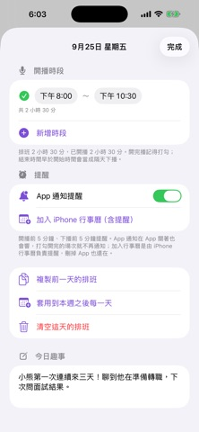
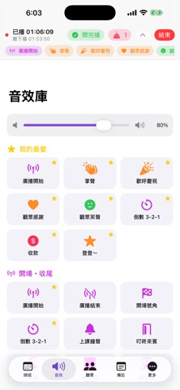

01
挑一天，排時段
打開「排班」，點月曆日期，在日期頁使用「新增時段」設定開始與結束時間。一天可以安排多個時段。
排班、音效、備忘與聽眾小抄，放在同一個隨身工具箱。從準備一場直播開始，把流程慢慢變順手。
打開「排班」，點月曆日期，在日期頁使用「新增時段」設定開始與結束時間。一天可以安排多個時段。
到「音效」先試聽，長按常用音效加入「我的最愛」，並調整播放音量。
按「開始直播」後，透過上方直播列查看時間與常用音效；完成這場直播後，再記錄完成狀態。

選好日期後，把預計開播的時段逐一加入。這頁同時提供複製排班與行事曆入口。
通知仍受 iPhone 授權與系統設定影響。開播前確認時間；完成後標記已開播。

從「音效」分頁找開場、歡呼或收禮感謝等音效，常用項目可以留在上方。
在排班頁點日期，設定每日、每週或每月任務。收到一個按 +1，長按可輸入數量；每週結算可整理當週分數。這是個人記錄工具，不提供送禮或付款。
到「聽眾」建立資料卡，整理暱稱、話題與標籤，也可搜尋常來的人。只記錄你有理由保存的資訊；分享畫面前先檢查資料卡內容。
「備忘」可寫直播筆記；「更多」中的話題工具可前往歌曲排行與外部搜尋，直播前先把要聊的重點整理好。
依 App 提供的匯出／匯入備份功能搬移資料。備份可能包含排班和聽眾內容，請保存在你信任的位置，匯入後再核對資料。
它是直播主的輔助工具箱。實際直播仍在你使用的平台進行；手冊中的「開始直播」指 App 內的直播輔助狀態。
先檢查 App 音量、iPhone 音量及目前音訊輸出裝置，再點音效試聽。正式直播前，用實際設備確認收音與音效表現。
日期頁提供「加入 iPhone 行事曆（含提醒）」入口，依裝置提示授權及完成加入。
本手冊以 App Store 公開版本 1.1 的描述與官方截圖為依據。商店截圖可能未涵蓋新版本的每個功能，請以目前 App 顯示為準。